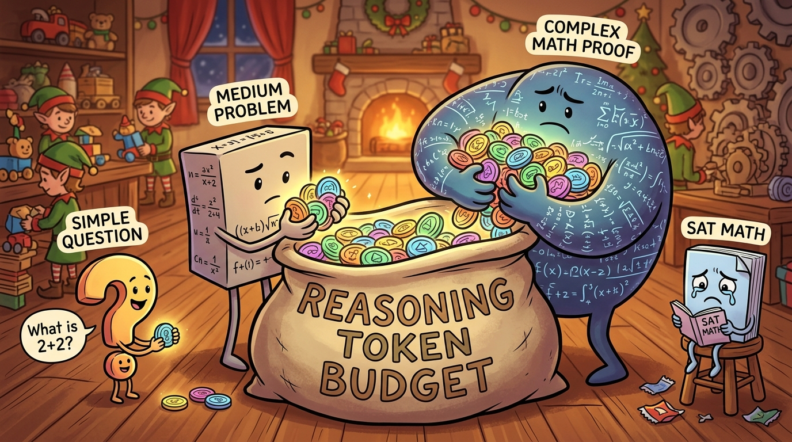
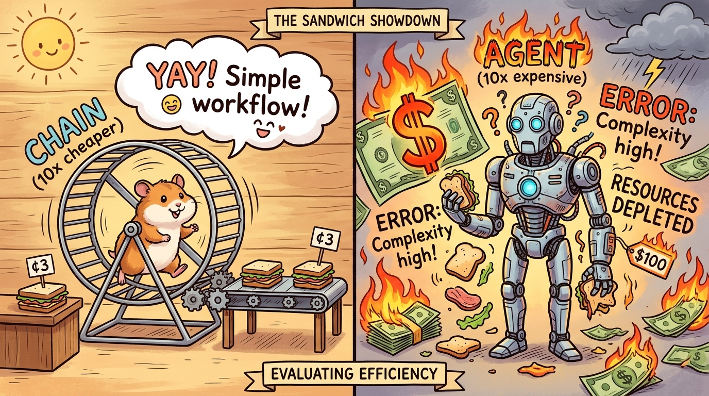

"Every AI feature has a cost per use. The question is not whether to optimize cost, but whether the value delivered exceeds the cost incurred. Without cost modeling, you are flying blind."
A Finance Partner Who Started Asking Questions
AI Cost Drivers
AI inference costs are dominated by token usage. Both input tokens (prompt, context, conversation history) and output tokens (generated response) consume budget. Understanding the relationship between your application behavior and token consumption is essential for cost management.
Token Cost Model
Most LLM APIs price by token, typically with different rates for input and output tokens:
# Example pricing (approximate, check current provider rates)
TOKEN_PRICING = {
"gpt-4o": {
"input": 0.005, # $ per 1K input tokens
"output": 0.015, # $ per 1K output tokens
},
"gpt-4o-mini": {
"input": 0.00015,
"output": 0.0006,
},
"claude-sonnet-4": {
"input": 0.003,
"output": 0.015,
}
}
def calculate_inference_cost(
model: str,
input_tokens: int,
output_tokens: int
) -> float:
"""
Calculate cost for a single inference call.
"""
pricing = TOKEN_PRICING[model]
input_cost = (input_tokens / 1000) * pricing["input"]
output_cost = (output_tokens / 1000) * pricing["output"]
return input_cost + output_cost

Hidden Cost Factors
Beyond token pricing, AI costs include several hidden factors that often surprise teams new to AI infrastructure. API overhead covers network latency, retries, and rate limit handling that add to the cost of each API call. Infrastructure includes vector databases, caching layers, and monitoring systems that support AI functionality. Engineering covers development time, evaluation infrastructure, and guardrails that require ongoing investment. Failures include retries, fallbacks, and human escalation that occur when things go wrong, which can significantly add to costs if not properly managed.
Total Cost of AI Inference
Token cost is often only 60-80% of total AI inference cost when you include infrastructure, engineering, and failure handling. True cost modeling must account for all components.
Cost per call is not cost per outcome. A feature that costs $0.01 per call may seem expensive, but if it drives a $10 purchase, the economics are excellent. Conversely, a feature costing $0.001 per call that does not change user behavior is pure waste. Always model cost in the context of value delivered, not just raw token consumption.
Building a Cost Model
Per-Feature Cost Model
Model costs at the feature level to understand unit economics:
@dataclass
class FeatureCostModel:
"""Cost model for a single AI feature"""
feature_name: str
model: str
avg_input_tokens: float
avg_output_tokens: float
calls_per_session: float
sessions_per_day: int
def daily_token_cost(self) -> float:
tokens_per_session = self.avg_input_tokens + self.avg_output_tokens
tokens_per_day = tokens_per_session * self.sessions_per_day
return (tokens_per_day / 1000) * TOKEN_PRICING[self.model]["input"] + \
(tokens_per_day / 1000) * TOKEN_PRICING[self.model]["output"]
def monthly_cost(self) -> float:
return self.daily_token_cost() * 30
# Example: QuickShip route optimization
route_optimization_cost = FeatureCostModel(
feature_name="route_optimization",
model="gpt-4o-mini",
avg_input_tokens=800,
avg_output_tokens=200,
calls_per_session=5,
sessions_per_day=10000
)
print(f"Route optimization daily cost: ${route_optimization_cost.daily_token_cost():.2f}")
Cost Sensitivity Analysis
Model how costs change with usage patterns to understand the relationship between scale and spending. The current baseline with ten thousand daily sessions results in a monthly cost of four hundred fifty dollars and a cost per session of $0.0015. With two times growth at twenty thousand daily sessions, monthly cost doubles to nine hundred dollars while cost per session remains constant at $0.0015. With ten times growth at one hundred thousand daily sessions, monthly cost reaches four thousand five hundred dollars while cost per session remains $0.0015. However, with caching at a seventy percent hit rate applied to the ten times growth scenario, monthly cost drops to one thousand three hundred fifty dollars and cost per session drops to $0.00045, demonstrating the dramatic impact that caching can have on costs at scale.
The Power of Caching
Caching can reduce costs by 50-90% for repetitive workloads. Even a modest 50% cache hit rate cuts token costs in half. Cost models must include caching assumptions.

Cost Optimization Opportunities
Model Selection
Use the smallest model that achieves the required quality:
# Quality vs Cost tradeoffs
MODEL_COMPARISON = {
"gpt-4o": {
"cost_per_1k_tokens": 0.020,
"quality_score": 0.95,
"use_cases": ["complex reasoning", " nuanced output"]
},
"gpt-4o-mini": {
"cost_per_1k_tokens": 0.00075,
"quality_score": 0.88,
"use_cases": ["simple extraction", " classification", " short responses"]
}
}
def select_cost_effective_model(
task: str,
quality_requirement: float
) -> str:
"""Select cheapest model meeting quality requirement."""
for model, specs in MODEL_COMPARISON.items():
if specs["quality_score"] >= quality_requirement:
return model
return "gpt-4o" # Fallback to best quality
Context Optimization
Reduce input token usage through better context management to lower costs without sacrificing quality. Summarization compresses conversation history so that older exchanges take fewer tokens while retaining essential information. Selective retrieval retrieves only relevant context rather than flooding the prompt with all available information, reducing tokens while maintaining the context needed for accurate responses. Chunk optimization right-sizes retrieved document chunks to include only the most relevant portions rather than entire documents. System prompt efficiency uses concise but clear instructions that communicate requirements without excessive verbosity.
Practical Example: HealthMetrics Diagnostic Assistant
The HealthMetrics team was optimizing their diagnostic assistant costs after the system reached forty thousand dollars per month and leadership questioned the return on investment. The problem was that the team did not know where costs were coming from, making it impossible to identify optimization opportunities. They faced a dilemma about whether to cut costs by reducing functionality or optimize efficiency instead.
The team decided to build a comprehensive cost model to identify optimization opportunities. They began by instrumenting all AI calls with token tracking to get accurate consumption data. They built a per-feature cost dashboard to see which features were most expensive. They identified that sixty percent of costs came from just three features, focusing optimization efforts where they would have the most impact. They found that forty percent of calls were using gpt-4o when gpt-4o-mini would have sufficed, indicating significant overspending on model tier. They discovered that twenty-five percent of retrieval calls returned irrelevant documents, wasting tokens on unhelpful context.
After optimization through model routing which saved thirty-five percent, retrieval improvement which saved twenty percent, and caching which saved fifteen percent, total costs dropped to twenty-two thousand dollars per month while maintaining quality. The lesson is that you cannot optimize what you cannot measure. Cost visibility is the first step to cost optimization.
Unit Economics for AI Features
Cost Per Outcome
Measure cost not just in tokens but in business outcomes:
@dataclass
class UnitEconomics:
"""Unit economics for an AI feature"""
feature_name: str
cost_per_call: float
conversion_rate: float # % of calls that lead to desired outcome
average_order_value: float
def cost_per_acquisition(self) -> float:
"""Cost to acquire one customer through this feature."""
if self.conversion_rate == 0:
return float('inf')
return self.cost_per_call / self.conversion_rate
def roi_threshold(self, customer_ltv: float) -> float:
"""Minimum conversion rate needed for positive ROI."""
return self.cost_per_call / customer_ltv
Marginal Cost Analysis
Calculate the marginal cost of AI features by comparing cost per session against revenue per session to understand unit economics. For product recommendation, the cost is $0.002 per session while revenue is $0.15 per session, yielding a margin of 98.7 percent which indicates an excellent return on investment. For support deflection, the cost is $0.05 per session while revenue is $2.50 per session, yielding a margin of 98.0 percent which also demonstrates strong economics. For content generation, the cost is $0.15 per session while revenue is only $0.05 per session, yielding a negative margin of negative 200 percent which means the feature costs more to run than it generates in value, indicating it may need to be redesigned, retired, or charged to a different budget.
Research Frontier
Research on "semantic caching" explores caching not just exact matches but semantically similar requests. This could dramatically improve cache hit rates for natural language queries while maintaining response quality.